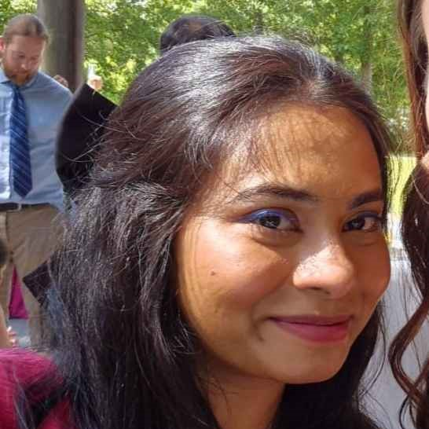
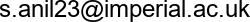

Swathi Anil

- 
- Lab member: 2023-2024
- University of Freiburg site
- Bluesky
- Google Scholar
- ORCID
- Mentored by: Dan Goodman, Marcus Ghosh
Swathi Anil visited the lab as a PhD student, working with non-linear algorithms and artificial neural networks to describe temporal multisensory processing in the brain.
Publications
Note that only publications as part of the Neural Reckoning group are included here (see external publications below for full list).
2025
-
Anil S, Goodman DFM, Ghosh M (2025)
Fusing multisensory signals across channels and time.
PLoS Computational Biology
External publications
This is a short preview of the publications from other sources (ORCID, Semantic Scholar). Note that publications from work done outside the Neural Reckoning group are included in this list.
2025
- Swathi Anil, Dan F. M. Goodman, Marcus Ghosh (2025)
Fusing multisensory signals across channels and time
PLOS Computational Biology
2023
- Swathi Anil, Han Lu, Stefan Rotter, Andreas Vlachos (2023)
Repetitive transcranial magnetic stimulation (rTMS) triggers dose-dependent homeostatic rewiring in recurrent neuronal networks
PLOS Computational Biology - Swathi Anil, Jennifer D’Souza (2023)
Toward Semantic Publishing in Non-invasive Brain Stimulation: A Comprehensive Analysis of rTMS Studies
Lecture Notes in Computer Science
2022
- Swathi Anil, Zahra Soltaninejad, Andreas Neef, Andrea Antal, Walter Paulus (2022)
TU-165. Theta burst stimulation with varying stimulus pulse durations and directions
Clinical Neurophysiology - Swathi Anil, Han Lu, Stefan Rotter, Andreas Vlachos (2022)
Modeling effects of repetitive Transcranial Magnetic Stimulation protocols in recurrent neural networks with homeostatic structural plasticity: exploring the rTMS parameter space
Unpublished
2021
- Swathi Anil, Han Lu, Júlia V Gallinaro, Stefan Rotter, Andreas Vlachos (2021)
Modeling effects of Hebbian plasticity protocols in recurrent neural networks with homeostatic structural plasticity - exploring rTMS parameter space
Unpublished
2020
- I. Halawa, K. Reichert, S. Anil, M. Sommer, W. Paulus (2020)
P260 Increasing pulse energy of 5Hz rTMS improves its efficacy in inducing excitatory aftereffects
Clinical Neurophysiology
2019
- I Halawa, K Reichert, S Anil, M Sommer, W Paulus (2019)
Increasing pulse energy of 5Hz rTMS improves its efficacy in inducing excitatory aftereffects